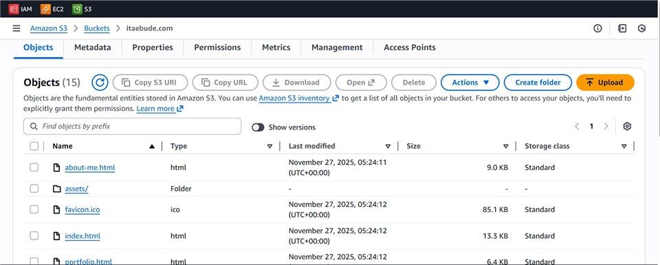
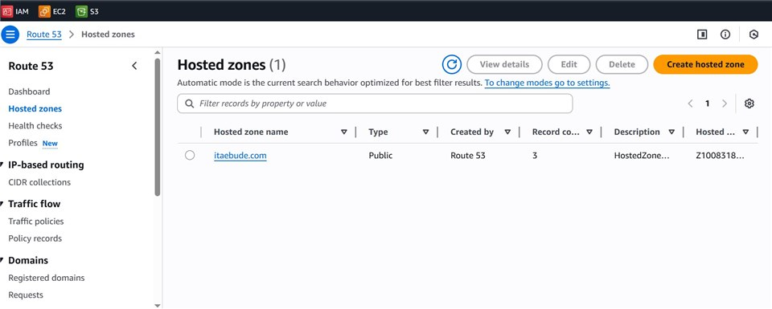

Static Website Hosting
Static Website Hosting on AWS S3 with CloudFront and Route 53
Ita's portfolio website
For this project, my goal was to deploy a fast, secure, and cost-efficient static website using AWS best practices. I chose Amazon S3 for hosting due to its durability and simplicity, and paired it with Amazon CloudFront to ensure low-latency, global content delivery. Route 53 manages the domain and DNS routing, providing reliable availability and seamless HTTPS integration through ACM. This setup results in a highly scalable architecture with 99.99% availability, sub-second load times, and a monthly cost of under $2.
This portfolio website you’re viewing is the live implementation of this architecture. You’re currently viewing it live on AWS infrastructure.
Explore my code on GitHub !
Architectural Diagrams


Screenshot of files in the S3 Bucket


Screenshot of the Route 53 console


Lessons Learned
- How to configure an Amazon S3 bucket for static website hosting and enforce proper public access settings.
- The importance of using CloudFront to improve global performance, caching, and security.
- How to connect a custom domain through Route 53 and integrate HTTPS using AWS Certificate Manager.
- Understanding how S3, CloudFront, and Route 53 work together to create a highly available, scalable architecture.
- Best practices for cost optimization when hosting static sites on AWS.
- How to troubleshoot common issues like permission errors, caching delays, and DNS propagation times.
- The value of documenting architecture decisions and creating diagrams to communicate technical solutions clearly.
- Gaining hands-on experience with deploying real-world infrastructure using AWS console and services.